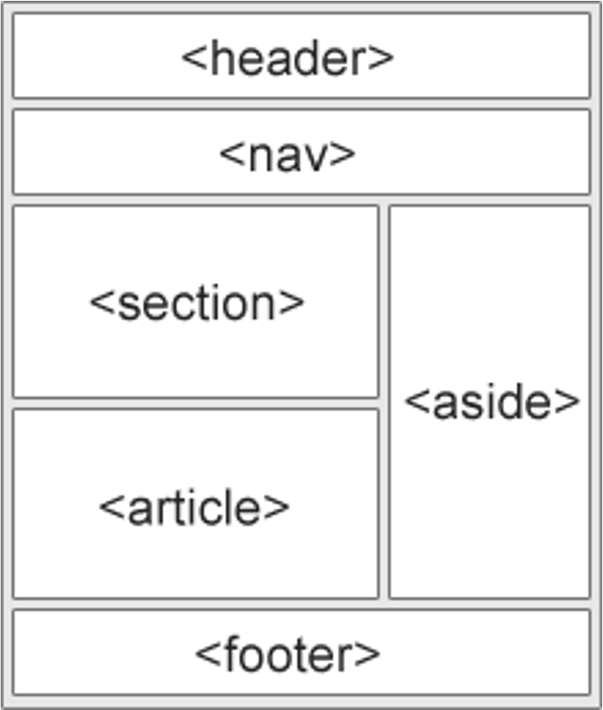

Layout
Elementos Semanticos de um Layout
<HEADER> - Define um cabeçalho para um documento ou seção.
<NAV> - Define um contêiner para links de navegação.
<SECTION> - Define uma seção de um documento.
<ARTICLE> - Define um artigo independente.
<ASIDE> - Define o conteúdo além do conteúdo (Como uma barra lateral).
<FOOTER> - Define um rodapé para um documento ou seção.
